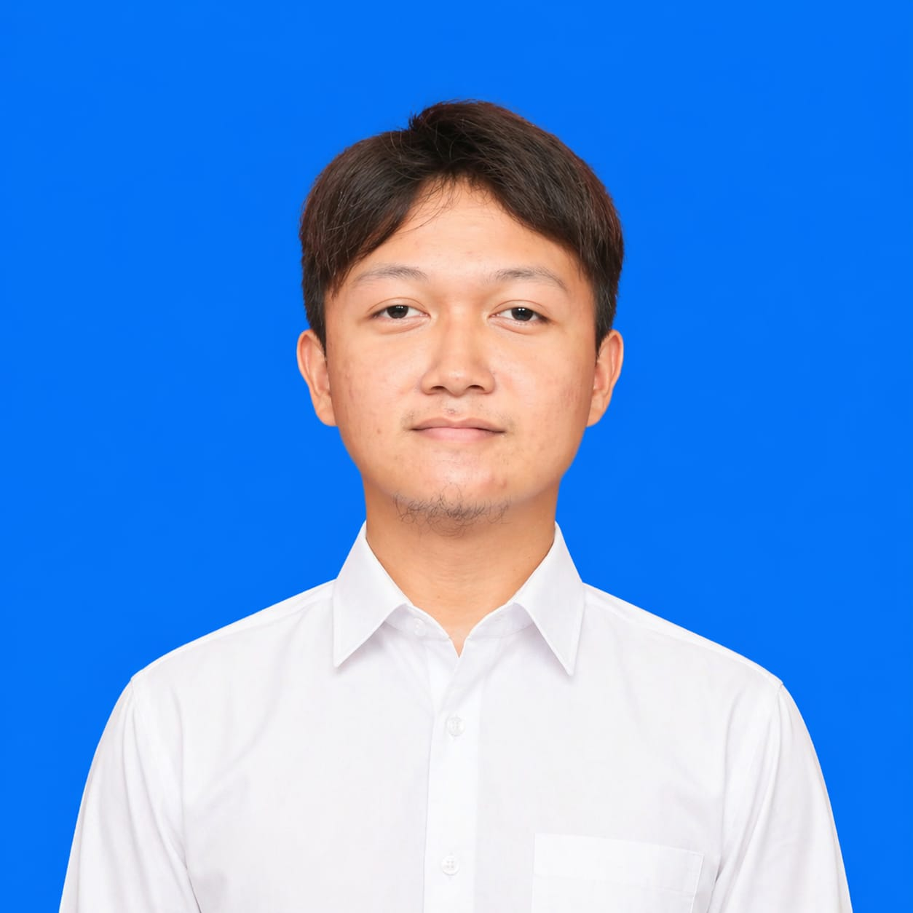

Lulusan SMA Negeri 6 Cimahi, berambisi melanjutkan studi D4 Mechatronics Engineering di POLMAN Bandung. Menggabungkan IT, Elektronika, dan Robotika dalam satu visi inovatif.

Saya adalah Diaz Hugo Anargya, seorang pemuda dari Bandung dengan minat mendalam di bidang teknologi. Setelah menyelesaikan pendidikan di SMA Negeri 6 Cimahi, saya berambisi untuk menjadi mahasiswa D4 Mechatronics Engineering di Politeknik Manufaktur Bandung (POLMAN).
Fokus saya ada di persimpangan empat bidang: IT (Website Development) untuk membangun solusi digital, Elektronika (Circuit Design & Simulation) sebagai fondasi rekayasa keras, Robotika (Mekanika & Otomasi) sebagai wujud nyata integrasi keduanya, serta Akademik (Matematika & Fisika) sebagai tulang punggung analitis saya.
Saya percaya bahwa inovasi terbaik lahir ketika dunia perangkat lunak bertemu dengan dunia perangkat keras — dan itulah jalan yang ingin saya tempuh.
Irisan Mekanika, Elektronika & Robotika dalam karya nyata.
Implementasi logika elektronik yang mengubah karakteristik push button (momentary) menjadi saklar lampu stabil (toggle) menggunakan algoritma state machine sederhana di platform Arduino. Memanfaatkan fitur debounce perangkat lunak untuk menghindari jitter sinyal.
Perancangan dan implementasi sistem otomasi lampu berbasis Light Dependent Resistor (LDR) dan rangkaian pembagi tegangan. Lampu menyala otomatis saat intensitas cahaya lingkungan turun di bawah ambang batas tertentu, ideal untuk aplikasi smart-home dan penerangan jalan hemat energi.
Saya terbuka untuk diskusi, kolaborasi proyek, maupun sekadar berbagi ide seputar teknologi dan rekayasa. Jangan ragu untuk menghubungi saya melalui salah satu kanal di bawah ini!